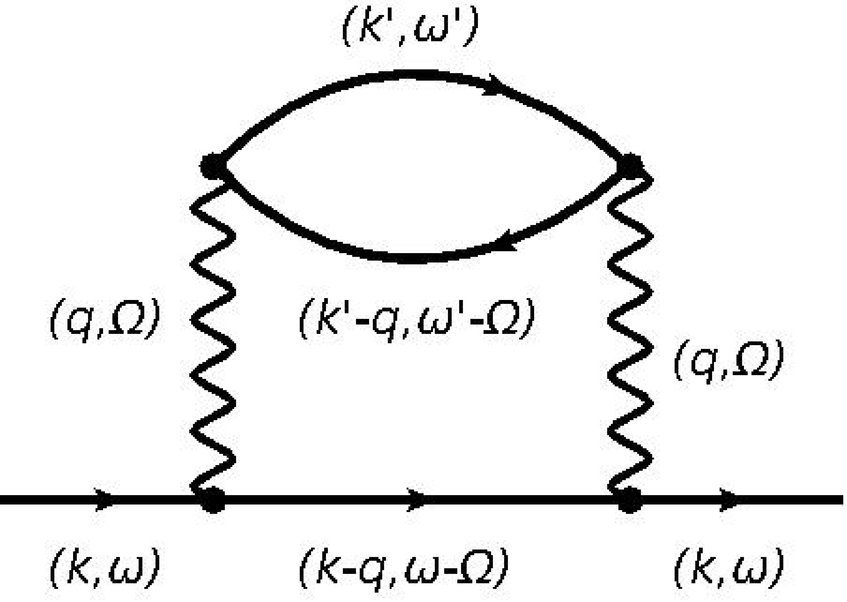
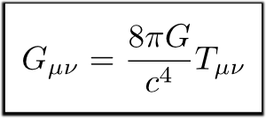
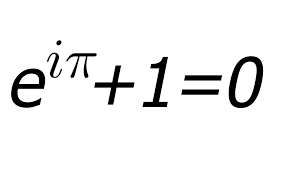
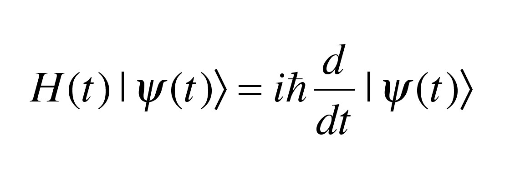
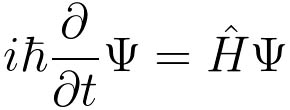
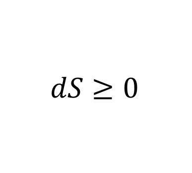
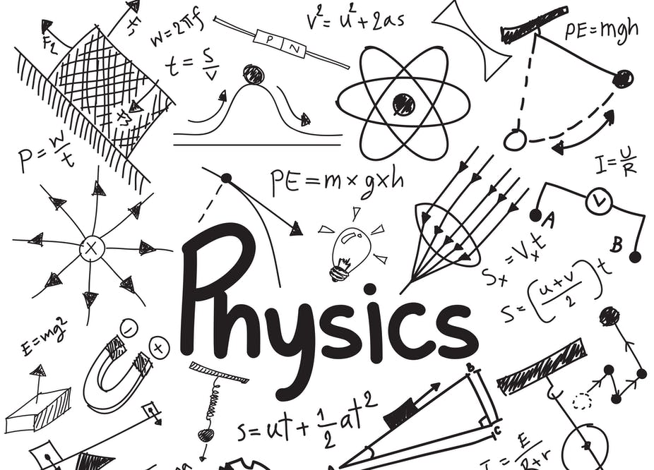

Quantum Field Theory
QFT is the framework describing fundamental interactions (except gravity). These notes were built during deep self-study and focus on conceptual structure alongside formal derivations.
Open QFT NotesFrom high school classrooms to master's-level courses, teaching has always been central to Darsh's work. The notes below are structured to help students build first-principles understanding rather than memorizing formulas.
Start with concepts, move to structure, then reinforce through worked examples and mathematical formalism.
Topics span foundational mechanics to advanced field theory, with both intuition-first and mathematically rigorous pathways.

QFT is the framework describing fundamental interactions (except gravity). These notes were built during deep self-study and focus on conceptual structure alongside formal derivations.
Open QFT Notes
Comprehensive GR notes connecting geometric ideas with physical interpretation, designed to make tensor methods and curved spacetime reasoning more approachable.
Open GR NotesMathematical classical mechanics notes emphasizing variational principles, generalized coordinates, canonical transformations, and problem-solving structure.
Open Classical Mechanics Notes
A foundations-first route through mathematical logic and structure, designed to strengthen rigor and proof-oriented thinking for physics and data science learners.
Open Foundations Notes
Third-year undergraduate level notes based on the Hilbert-space viewpoint of quantum theory, with focus on operators, states, and formalism fluency.
Open Quantum Theory Notes
Wavefunction-based quantum mechanics notes that complement the vector-space treatment, useful for learners transitioning from intuition to formal operator methods.
Open Quantum Mechanics Notes
Introductory-to-intermediate notes on ensembles, entropy, partition functions, and the bridge between microscopic statistics and macroscopic thermodynamic laws.
Open Statistical Mechanics Notes
Summary notes for a University of Toronto course built for non-physics students, designed to make core physical ideas engaging and accessible.
Open Magic of Physics Notes